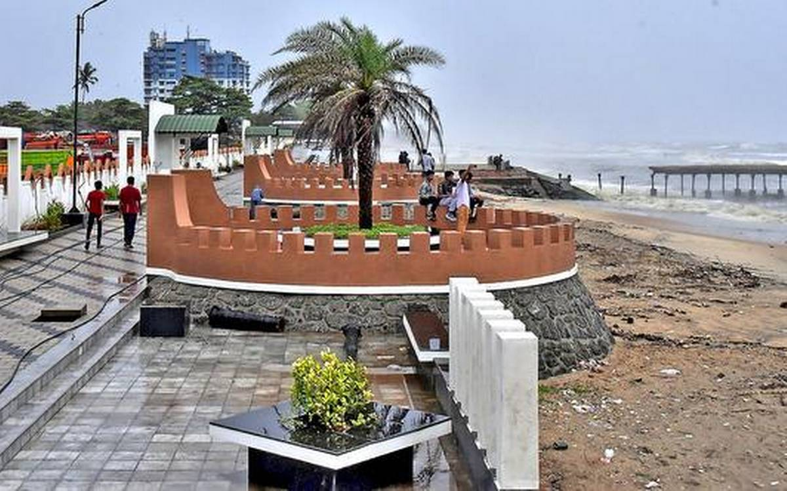
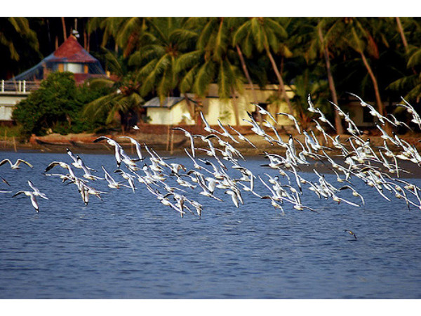

Kozhikode Beach
Kozhikode will always have a special place in the history of Kerala as it is here that Vasco-da-Gama first landed and the legendarySpice Route came into existence. This region still has a historic charm to it. Kozhikode Beach is the personification of the numerous characteristics that make Kozhikode so unique.
People flock in large numbers to view the sunset from the beach. One gets a fresh supply of seafood in the shacks that surround the place. Kallumekaya (mussels) is a local favourite. A walk to Dolphins Point at dawn ensures a meeting with playful dolphins. You are also greeted by a majestic lighthouse and two piers opening into the sea. Both have been here for over a hundred years. Children flock to Lions Park and the nearby marine water aquarium which is open on all days from 08:00 hrs to 20:00 hrs.
How to Get Here
Nearest railway station: Kozhikode, about 3 km Nearest airport: Calicut International Airport, about 29 km | Kannur International Airport, about 95 km
Kadalundi Bird Sanctuary
A cluster of scenic islands, beautiful hills and rare avian species would intrigue and entice every birdwatcher on the planet. This is exactly what the Kadalundi Bird Sanctuary has to offer its visitors. One is greeted by the Kadalundi River flowing into the Arabian Sea while migratory birds casually flit about.
This untouched land has over 60 species of migratory birds from across the planet that visits it during different times of the year. One can see seagulls, terns, sandpipers, sand plovers, red and greenshanks, turnstones and so on with November to April being the ideal viewing time. A small hill nearby gives you a panoramic view of the entire region. You can sit back and relax, with the odd otter peeking out at you playfully. This is indeed a paradise designed especially for bird lovers.
How to Get Here
Nearest railway station: Kozhikode, about 19 km Nearest airport: Calicut International Airport, about 23 km | Kannur International Airport, about 115 km
Pazhassiraja Archaeological Museum

A veritable treasure trove for historians and connoisseurs of art, the Pazhassi Raja Museum is located in Kozhikode. The Pazhassi Raja Museum & Art Gallery adjacent to the museum displays the acclaimed paintings of Kerala's cherished artists, Raja Ravi Varma (1848 - 1906) whose works brought international repute to the State and his uncle Raja Raja Varma.
The museum is managed by the State Archaeology Department and has on display mural paintings, antique bronzes, ancient coins, models of temples, umbrella stones, dolmenoid cists (quadrangular burial chambers with capstones), and similar megalithic monuments.
The museum and the art gallery are named after the great Pazhassi Raja, born Kerala Varma of the Padinjare Kovilakom of the Kottayam Royal Family. The famous 'Pazhassi Revolt' (against the British East India Company during the second half of the 1700s) was led by Pazhassi Raja. Nicknamed the Lion of Kerala, Pazhassi Raja is also credited with introducing guerrilla warfare in the hills of Wayanad to resist the increasingly intolerable British colonialism. This great freedom fighter was shot dead in an encounter on 30 November 1805.
How to Get Here
Nearest railway station: Kozhikode Nearest airport: Calicut International Airport, about 23 km from Kozhikode town | Kannur International Airport, about 95 km
Sarovaram Bio Park

Sarovaram (also known as Sarovaram Bio Park) is an eco-friendly development near Kottooly in Kozhikode city in India. The park is situated adjacent to Canoly Canal. The project has been developed with an eco-friendly theme and is located in an ecosystem consisting of wetlands and mangrove forests containing bird habitats.
This park is a protected place to conserve mangrove species and other flora. This park is identified as one of the 27 wetlands of India. There are 7 mangrove species and 29 associated species. This park is the habitat for 34 types of birds. The canal is eleven kilometres long and connects the Korapuzha and Kallayi rivers. The park contains boating facilities, musical fountain and an open-air theatre. Of late the park has gained a reputation as a popular hangout of college couples. It is also the favourite spot of photographers for pre marriage shoots and other photoshoots.The construction has been done in traditional Kerala style.
How to Get Here
The park is located on the Mini Bypass Road, Kottooli, 4 kms from the Kozhikode Railway Station. It can easily be reached in private taxi cabs, auto- rickshaws or state-run buses. Alternatively, you can drive down to the spot.